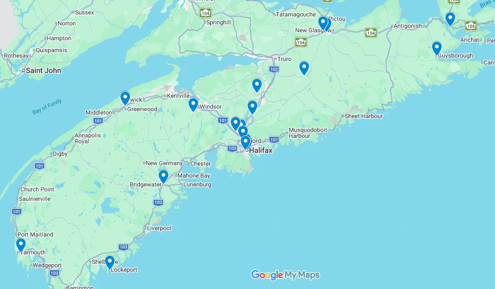

Outreach, Engagement and Academic Service
Throughout my academic career in Canada and Pakistan, I have contributed to mathematics outreach, student engagement, teaching initiatives, and academic service.
Nova Scotia Math Circles
Co-Manager | April 2026–Present
Mathematics Presenter | Since September 2023
I am actively involved in promoting mathematical curiosity, problem-solving, and critical thinking among school students across Nova Scotia through interactive presentations, games, puzzles, and hands-on mathematical activities.
Expanding the Reach of Mathematics Across Nova Scotia
Since April 2026, as Co-Manager of Nova Scotia Math Circles, I have organized mathematics outreach visits across urban, rural, and geographically dispersed communities. My goal is to maximize provincial coverage through strategic planning and efficient coordination, particularly reaching remote, sparsely populated, and underserved communities.

Mathematics Camps and Public Engagement
- Dalhousie University Open HouseOctober 24, 2026Math Fun Counting Through Games and Puzzles
- Dalhousie Mathematics CampJuly 23, 2026Some Fun Counting Through Recursion
- Government Degree College for Women, Lahore2019Invited lecture: Monomial Ideals
- Government College, Satellite Town, GujranwalaJune 12, 2018Invited lecture: Graphs and Ideals
Mathematics Olympiads and Competitions
- Olympiad RefereeApril 16, 20196th CASPAM Regional Student Olympiad of Mathematics, Bahauddin Zakariya University, Multan
- Olympiad RefereeApril 19, 20185th CASPAM Regional Student Olympiad of Mathematics, Bahauddin Zakariya University, Multan
- Secretary, Poster Competition on Mathematics and Its ApplicationsJanuary 7, 2019Government College University Lahore
Student Societies and Extracurricular Leadership
- President, GCU Chess Club2013–2019Government College University Lahore
- Co-Advisor, Chawala Mathematical Society2018–2019Government College University Lahore
- Member, University Sports Board2014–2019Government College University Lahore
- Member, Departmental Sports Committee2017–2019Government College University Lahore
Academic Community Engagement
- Co-Organizer, Atlantic Teaching in Mathematics and Statistics SeminarFall 2025–PresentDalhousie University — Co-organizing a seminar series dedicated to mathematics and statistics pedagogy, innovative teaching practices, and professional development.
- Organizing Committee Member2017 and 2018International Conference on Mathematics and Its Applications, Government College University Lahore
- Departmental Seminar In-Charge2012–2017Department of Mathematics, Government College University Lahore